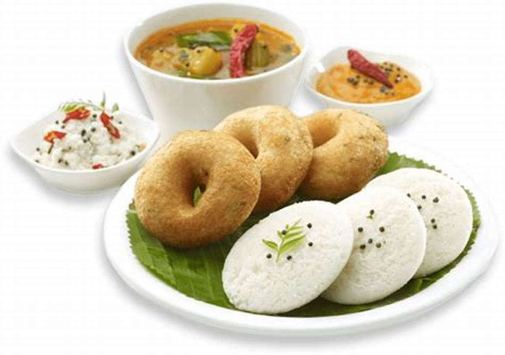
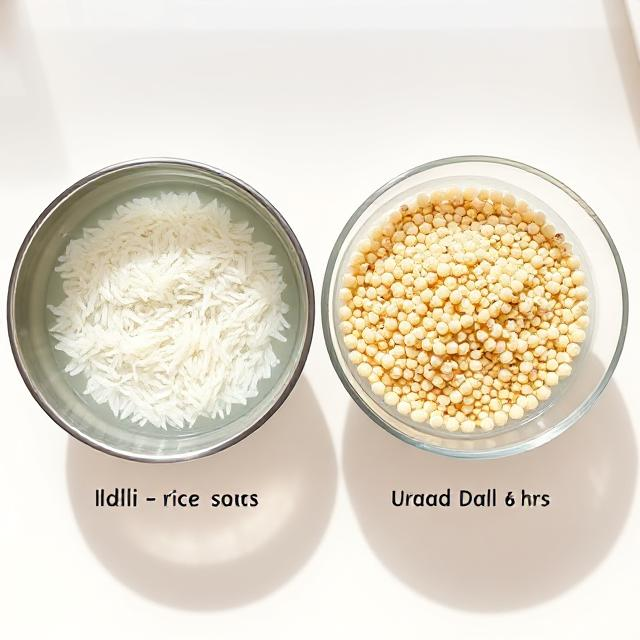
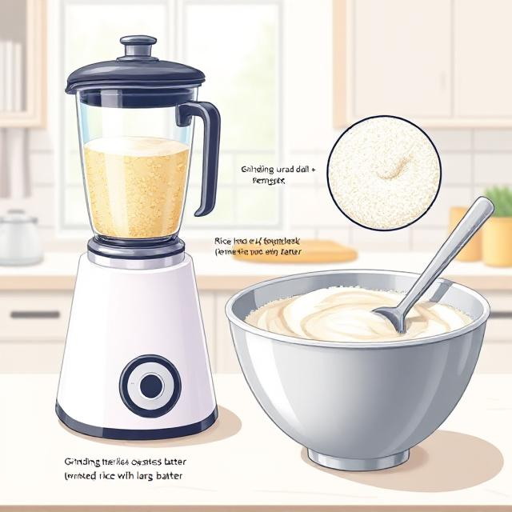
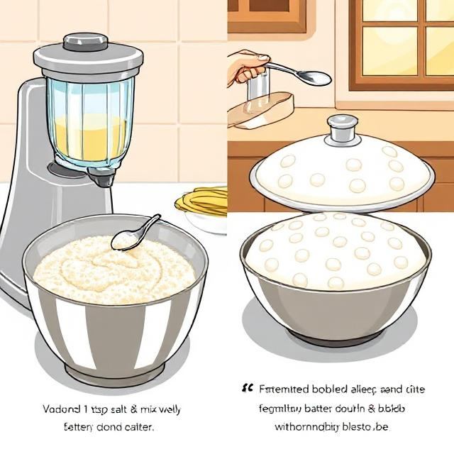
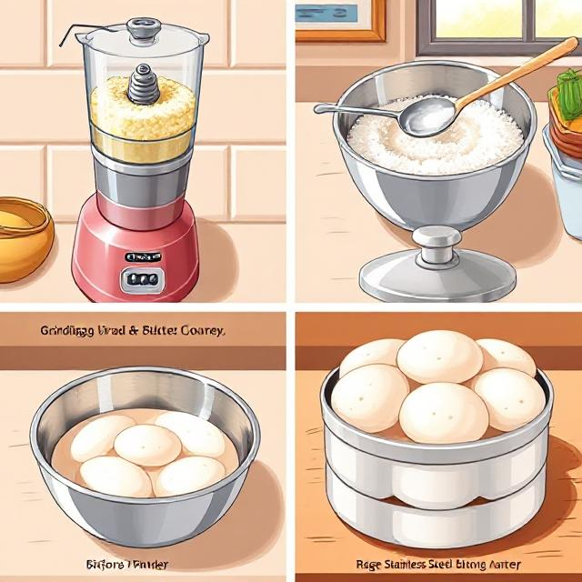

Requirements
| Category | Item | Quantity |
|---|---|---|
| Ingredients | Idli rice (parboiled rice) | 2 cups |
| Whole urad dal (black gram split & skinned) | 1 cup | |
| Fenugreek seeds (optional) | ½ tsp | |
| Water | As needed | |
| Salt | As needed | |
| Equipment | Mixer or wet grinder | 1 |
| Idli steamer or pressure cooker (without weight) | 1 | |
| Idli plates/moulds | As needed | |
| Large bowl for soaking | 2 | |
| Spatula / spoon | 1 |

Soaking
- Rinse 2 cups of idli rice and soak it in water for at least 6 hours.
- Rinse 1 cup of urad dal and soak it along with ½ tsp fenugreek seeds for 6 hours.

Grinding
- Grind urad dal + fenugreek in a wet grinder or blender using little water till you get a smooth, fluffy batter.
- Next, grind the rice with water until it's slightly coarse (like fine semolina).
- Mix both batters together in a large bowl.

Fermentation
- Add salt (around 1 tsp) and mix well.
- Cover and keep the batter in a warm place for 8-12 hours or overnight to ferment.
- The batter should double in volume and appear bubbly.

Steaming
- Grease the idli moulds with oil.
- Pour the fermented batter into the moulds.
- Steam in an idli steamer or pressure cooker (without the whistle) for 10–15 minutes on medium flame.
- Check by inserting a toothpick—it should come out clean.
